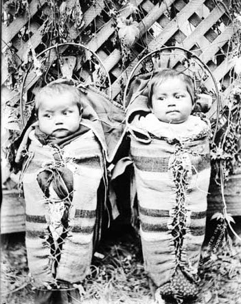
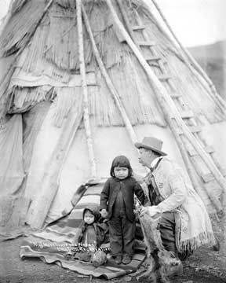
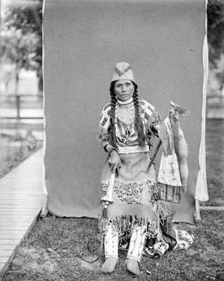

Moorhouse Collection
Anna Lieberman





Anna Lieberman
BY LINE
here is the story and there is not much else to say that. here is the story and there is not much else to say that. here is the story and there is not much else to say that. here is the story and there is not much else to say that. here is the story and there is not much else to say that. here is the story and there is not much else to say that. here is the story and there is not much else to say that. here is the story and there is not much else to say that. here is the story and there is not much else to say that. here is the story and there is not much else to say that. here is the story and there is not much else to say that. vhere is the story and there is not much else to say that. here is the story and there is not much else to say that.BY LINE
here is the story and there is not much else to say that. here is the story and there is not much else to say that. here is the story and there is not much else to say that. here is the story and there is not much else to say that. here is the story and there is not much else to say that. here is the story and there is not much else to say that. here is the story and there is not much else to say that. here is the story and there is not much else to say that. here is the story and there is not much else to say that. here is the story and there is not much else to say that. here is the story and there is not much else to say that. vhere is the story and there is not much else to say that. here is the story and there is not much else to say that.Sydney Zuelke
Many college students aim to leave a legacy in the short amount of time they have living as carefree and hopeful as they’ll ever be. For a lucky bunch, their legacy reigns on nearly 40 years after their time at the University of Oregon – this was the class of Animal House.
The year was 1978 and a group of bell-bottom blue jean wearing college kids are lounging with their backs against a dusty cherry red Ford Cortina. The sun has gone down but the city of Eugene is alive. Somewhere in the distance the late, great John Belushi can be seen signing autographs for a group of giggling girls.
A compilation of old footage from the filming of Animal House gives the impression that this was one of the most thrilling times the city of Eugene has felt.
“It’s madness, but it’s really exciting madness,” a female student sporting wide-rimmed glasses and some serious bangs says in an interview with a local news station. She is one of many UO students chosen to be an extra in the Hollywood film.
The madness continued eight years following the film, when the “Delta Tau Chi” a.k.a. Animal House on E. 11th Street was being demolished.
A bulldozer sits in front of the dumpy white house, shutters dangling and furniture arranged atop the roof. As a mystery man throws a soggy armchair from the second story, the crowd goes wild – students have gathered around, boom-box and beer in hand to commemorate the legendary landmark.
“It’s another reason to get together with the boys [and drink some beer]. But more importantly we’re together here and showing we love fraternities,” a male student says in an interview with KEZI. “[Belushi] would have wanted us to do this – it’s in his memory that we’re out here.”
Although we weren’t able to leave our legacy on the big-screen, we share the pride of having this ever-lasting connection to the iconic film and bask in the familiarity we feel when watching Belushi suck down jello in the Fishbowl, or ROTC members march along Hayward Field.
“It’s a piece of our culture, 50 years from now that movie is going to be history,” a woman said, standing nearby as the ‘Animal House’ was being torn down in 1986. She was right.
BY LINE
here is the story and there is not much else to say that. here is the story and there is not much else to say that. here is the story and there is not much else to say that. here is the story and there is not much else to say that. here is the story and there is not much else to say that. here is the story and there is not much else to say that. here is the story and there is not much else to say that. here is the story and there is not much else to say that. here is the story and there is not much else to say that. here is the story and there is not much else to say that. here is the story and there is not much else to say that. vhere is the story and there is not much else to say that. here is the story and there is not much else to say that.BY LINE
The Burgess Manuscript Collection is an anomaly among the items at Special Collections. Comprised of 64 books, half which date back to the Medieval and Renaissance, are handwritten works of which their donation marked the beginning of the rare book collection at the University and Special Collections itself.
“The fact that we actually have full works, in their entirety, in this form, is pretty unusual,” Bruce Tabb, Special Collections Librarian and expert on the Burgess Collection.
The books were donated and sold to the University thought the late 30’s by Julian Burgess after her brother and original owner of the collection died. The Burgess Collection is actually comprised of three separate collections, the Burgess Rarebook, Manuscript, and Family Papers collection.
“The fact that we have thirty-five books in their entirety is pretty special” Bruce Tabb
Some of the books include a commentary on the numbering system of the Bible, a book on sexuality and marriage, and a history of the Roman Empire that was written in the middle ages. One of the more unique pieces is a medieval textbook where the writing of a student is present. Drawings of hands can be seen that were used to highlight certain passages, way before highlight markers were invented.Design @DavidBaggs | Web Development @Sierra_morgann